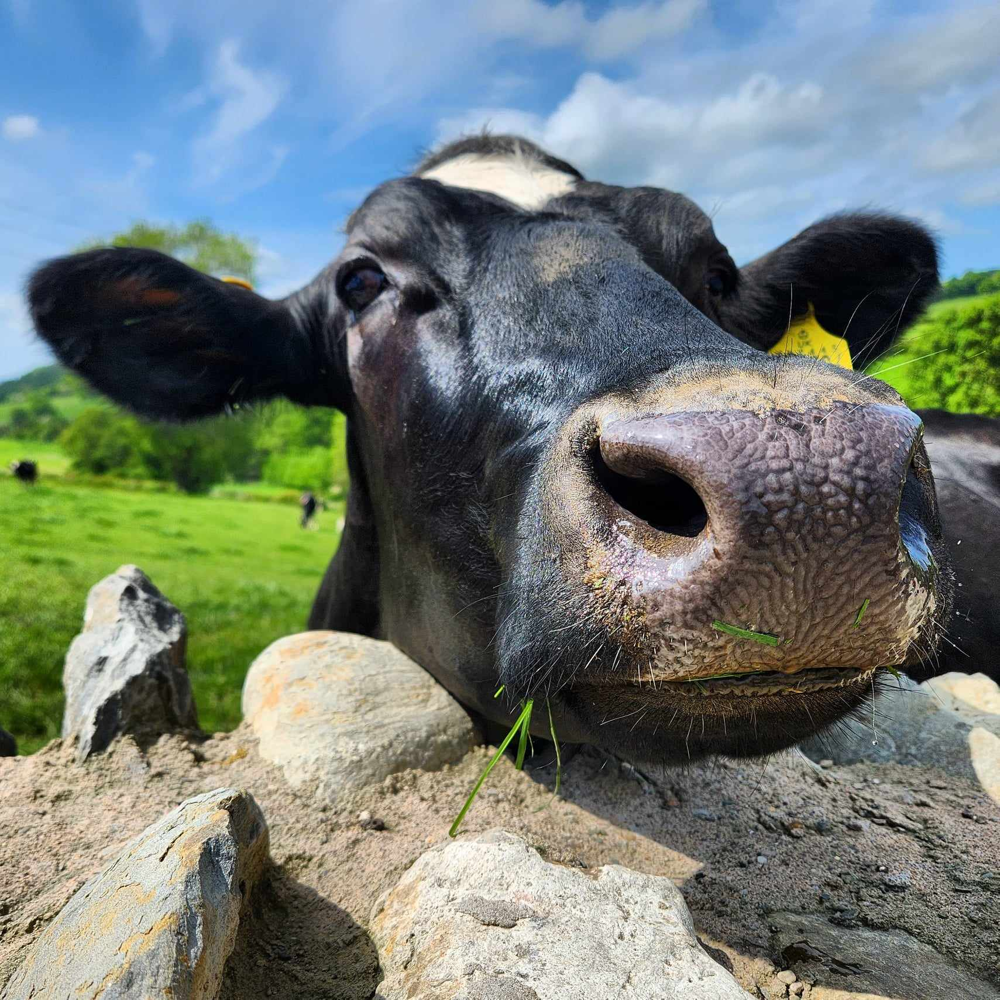
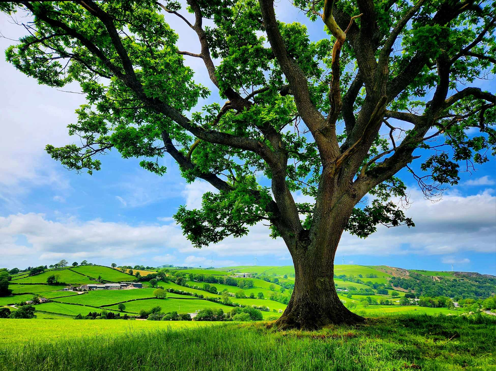

- Home
- Travel
- Schedule
- Q&A
- RSVP
Välkommen,Croeso & Welcome
SATURDAY, 27TH JULY 2024
at TYN CELYN, GWYDDELWERN
 Hi!
We’re so excited to be able to celebrate our wedding with our friends and family this summer and do hope that you’ll be able to join us!
Hi!
We’re so excited to be able to celebrate our wedding with our friends and family this summer and do hope that you’ll be able to join us!
As you know, we officially got married earlier this year in a small ceremony with close family in Sweden, but we missed out on a party with our friends and the rest of our families. So, as we both hate to miss any opportunity to celebrate an occasion, we hope we can make up for that in July!

Tyn Celyn
is Haydn's childhood home and family farm. His parents, Hywel and Rose and his brother John and family continue to run the farm today and have kindly allowed us to pitch up a marquee on one of the fields to celebrate with you all.

The farm is also somewhere where we have spent a lot of time, having spent our first summer together there.
It is located in the beautiful countryside of North Wales, surrounded by rolling hills and cows (which you’ll know if you follow Julia on Instagram)!
If this will be your first time in Wales, we’re sure it won’t be your last and we’ll always be happy to welcome you here.
RSVP here